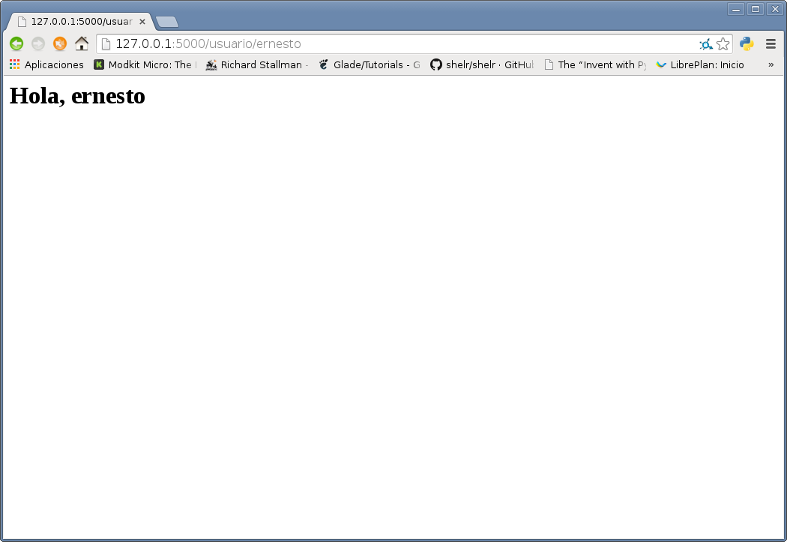
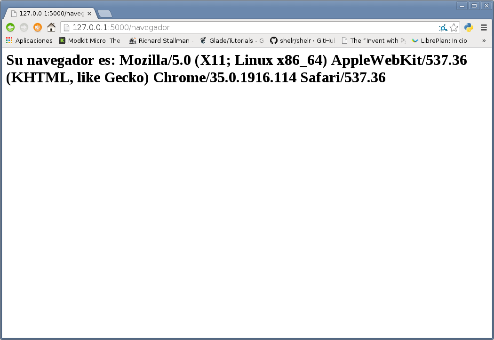

Micro framework flask (parte 2)
Posted on sáb 07 junio 2014 in Tutorial Python • 2 min read
Continuando con el artículo inicial sobre el microframework flask, ahora se muestra el manejo de distintas rutas de urls, se muestra también como obtener información sobre el navegador que se está utilizando para ver la página y por último como redireccionar una ruta a otro url.
A continuación se muestra el código de app.py:
#de flask se importa Flask, request y redirect.
from flask import Flask,request,redirect
#Se crea la instancia del objeto Flask.
app = Flask(__name__)
#Se define el decorador ruta en este caso será la raíz del url, donde
#se muestra hola mundo desde flask
@app.route('/')
def hola_mundo():
return "Hola Mundo <strong>desde Flask</strong>"
#En este caso el decorador ruta maneja un directorio ususuario y se coloca el nombre del
#usuario en el url
@app.route('/usuario/<nombre>')
#Se define la función usuario donde se le pasa el nombre
#devuelve un texto que dice hola y el nombre del usuario.
def usuario(nombre):
return "<h1> Hola, %s </h1>" % nombre
#Se define la ruta navegador
@app.route('/navegador')
#Se crea la función navegador
#donde se obtiene el headers de User-Agent el cual maneja el nombre
#del navegador que se está usando, la función navegador retorna un string con
#el nombre del navegador.
def navegador():
user_agent= request.headers.get('User-Agent')
return "<h1>Su navegador es: %s </h1> " % user_agent
#Se define la ruta redirect
@app.route('/redirect')
#se crea la función redir el cual retorna el nuevo url que será este blog.
def redir():
return redirect('https://www.seraph.to')
#Se define la ejecución del servidor.
if __name__ == '__main__':
app.run(debug=True)
A continuación se ejecuta app.py:
python app.py
* Running on http://127.0.0.1:5000/
* Restarting with reloader
Se abre el navegador colocando en el url el nombre que se desea mostrar en este caso ernesto: http://127.0.0.1:5000/usuario/ernesto
La imagen muestra el resultado:

Ahora se colocará el url que permite mostrar la información del navegador: http://127.0.0.1:5000/navegador
La siguiente figura muestra el resultado:

Para terminar se colocará el url que permite redireccionar un url a otro url, en este caso se grabará un screencast para mostrar la acción. El url es: http://127.0.0.1:5000/redirect
El vídeo se muestra a continuación:
¡Haz tu donativo! Si te gustó el artículo puedes realizar un donativo con Bitcoin (BTC) usando la billetera digital de tu preferencia a la siguiente dirección: 17MtNybhdkA9GV3UNS6BTwPcuhjXoPrSzV
O Escaneando el código QR desde la billetera: